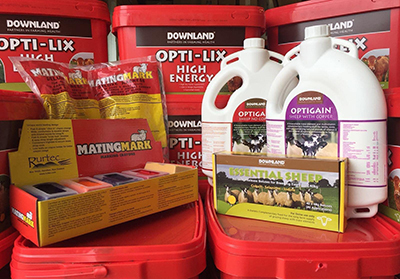
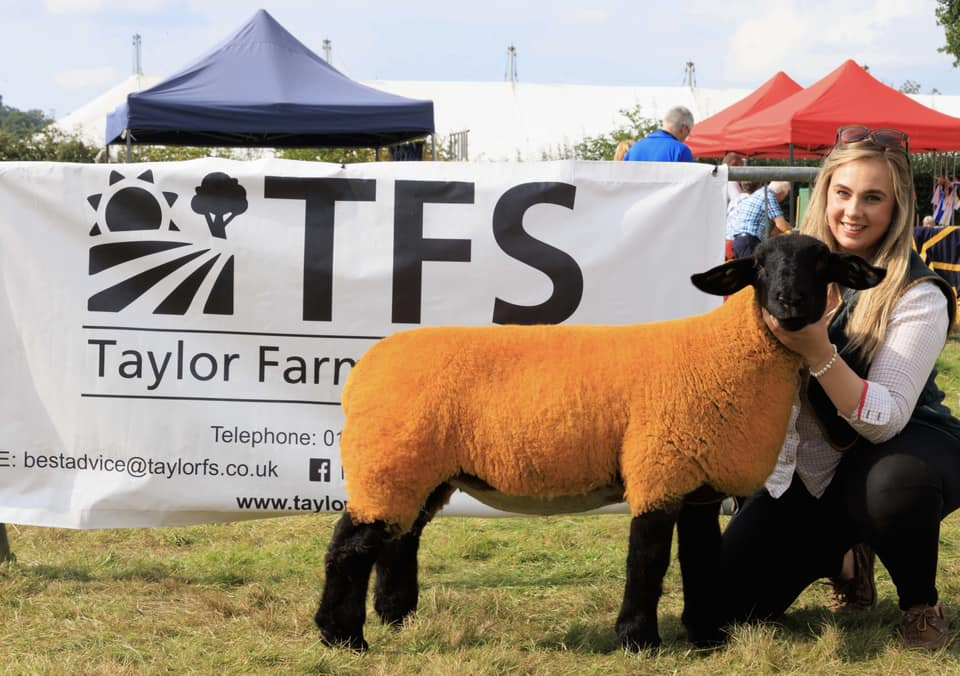
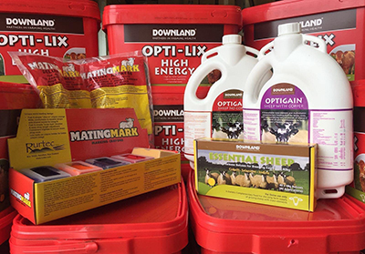
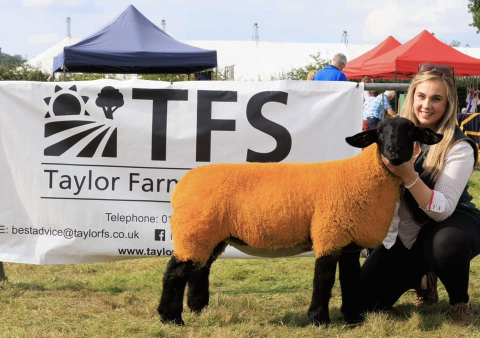

About Taylor Farm Supplies
We are an independent, family-owned business with over 42 years of farm calling experience. We have a proud reputation for continually delivering an outstanding level of customer service along with excellent advice and product recommendation. We are proud to offer independent, professional egg counting provided by the FECPAK G2 system, to ensure that you are using the correct product, helping to reduce the risk of possible resistance. Our mission statement at TFS is "the right product, at the right time, for the right job" - try us and see for yourself!
Partners
We are proud to be a part of the Downland Group, with exclusive access to their full range of products and services within our franchise area. We are also an officially appointed supplier of the high quality range of bulk and bagged feeds manufactured and supplied by forFarmers, all part of supporting the best of British Farming.
Network
Taylor Farm Supplies has an excellent network of connections with major suppliers and their representatives. This added value means that accompanied on-farm visits, including detailed technical support can be arranged to assist you, all at no extra cost.
 


